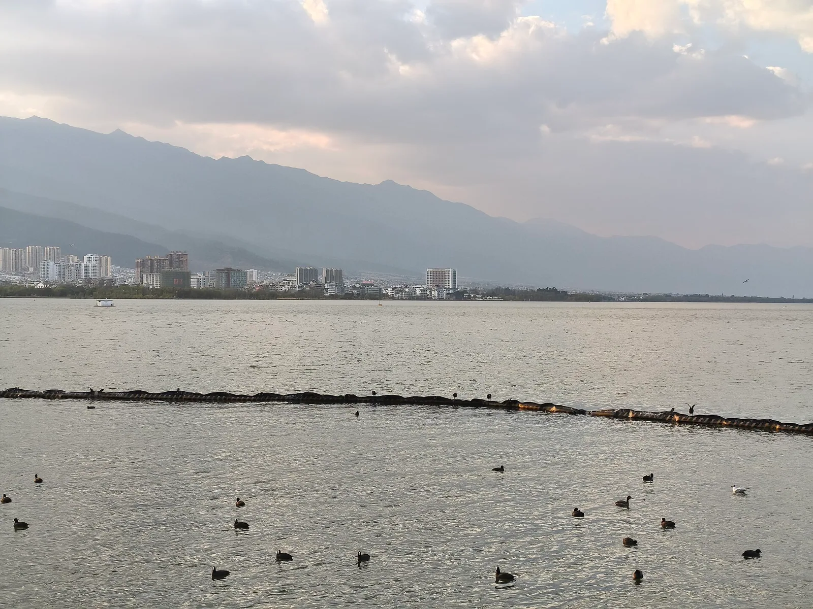
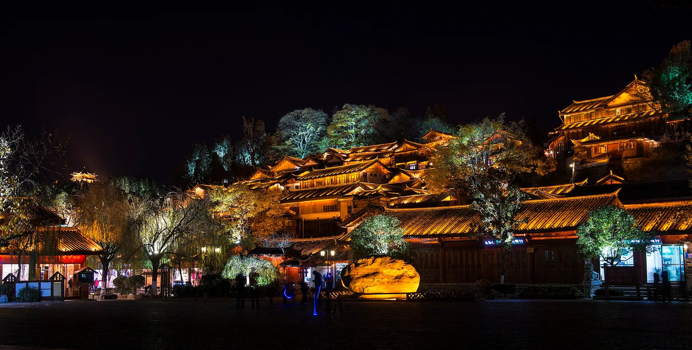

3天 · 独立成团
广州3天文化美食私家团：西关古韵与广式早茶
用三天时间慢游广州西关，从陈家祠的雕刻与建筑细节，到永庆坊和荔枝湾的街巷水岸，再到沙面与西堤的商贸记忆。
查看行程与住宿参考价 →北京、上海、云南、广州，每地5条经典私家团线路。独立成团、不拼团，按您的日期、兴趣与同行人数定制。
四星、五星档住宿参考价已列入各线路；查询入住日期为2026年11月8日至9日，2位成人1间1晚。各酒店优惠资格与税费说明详见线路页，非全程团费。

围绕皇城与胡同设计的北京2天私家团方案，串联故宫博物院、景山公园、天坛公园、前门大街、什刹海等目的地点位。
查看行程与住宿参考价 →围绕故宫与长城设计的北京3天私家团方案，串联故宫博物院、景山公园、八达岭长城、天坛公园、什刹海等目的地点位。
查看行程与住宿参考价 →围绕园林与古都设计的北京4天私家团方案，串联故宫博物院、景山公园、颐和园、天坛公园、前门大街等目的地点位。
查看行程与住宿参考价 →围绕亲子文化设计的北京4天私家团方案，串联故宫博物院、颐和园、八达岭长城、天坛公园、什刹海等目的地点位。
查看行程与住宿参考价 →围绕古都全景设计的北京5天私家团方案，串联故宫博物院、景山公园、八达岭长城、颐和园、圆明园遗址公园等目的地点位。
查看行程与住宿参考价 →
围绕城市初见设计的上海1天私家团方案，串联豫园、南京东路步行街、外滩等目的地点位。
查看行程与住宿参考价 →围绕城市与水乡设计的上海2天私家团方案，串联豫园、南京东路步行街、外滩、朱家角古镇等目的地点位。
查看行程与住宿参考价 →围绕文博与滨江设计的上海3天私家团方案，串联豫园、外滩、上海博物馆（人民广场馆）、人民广场、北外滩等目的地点位。
查看行程与住宿参考价 →围绕园林与水乡设计的上海3天私家团方案，串联外滩、豫园、朱家角古镇、上海大观园等目的地点位。
查看行程与住宿参考价 →围绕海派慢游设计的上海4天私家团方案，串联豫园、南京东路步行街、外滩、朱家角古镇、上海大观园等目的地点位。
查看行程与住宿参考价 →
围绕滇西北初见设计的云南6天私家团方案，串联昆明翠湖、滇池、石林风景区、昆明至大理转场、大理古城等目的地点位。
查看行程与住宿参考价 →围绕古城与茶马街巷设计的云南5天私家团方案，串联大理古城、洱海、喜洲古镇、沙溪古镇、大理至丽江转场等目的地点位。
查看行程与住宿参考价 →围绕苍洱慢生活设计的云南4天私家团方案，串联大理古城、洱海、喜洲古镇、洱海周边、苍山景区等目的地点位。
查看行程与住宿参考价 →
围绕古城与高原人文设计的云南5天私家团方案，串联丽江古城、玉龙雪山景区、丽江至香格里拉转场、独克宗古城、普达措景区等目的地点位。
查看行程与住宿参考价 →围绕滇西北经典环游设计的云南7天私家团方案，串联大理古城、洱海、喜洲古镇、沙溪古镇、大理至丽江转场等目的地点位。
查看行程与住宿参考价 →围绕西关初见设计的广州1天私家团方案，串联陈家祠、永庆坊、沙面等目的地点位。
查看行程与住宿参考价 →围绕千年古城设计的广州2天私家团方案，串联越秀公园、南越王博物院、北京路、陈家祠、永庆坊等目的地点位。
查看行程与住宿参考价 →围绕建筑与城市生活设计的广州3天私家团方案，串联陈家祠、永庆坊、沙面、西堤历史建筑外观、东山口等目的地点位。
查看行程与住宿参考价 →围绕古城与滨水设计的广州4天私家团方案，串联越秀公园、南越王博物院、北京路、陈家祠、永庆坊等目的地点位。
查看行程与住宿参考价 →围绕文化慢生活设计的广州5天私家团方案，串联越秀公园、南越王博物院、陈家祠、永庆坊、荔枝湾等目的地点位。
查看行程与住宿参考价 →